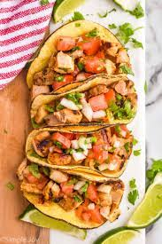

Easy Chicken Street Tacos

Description
A street taco is a traditional Mexican taco, except it's smaller in size and made with a corn tortilla. This specific one is made with chicken, onions, and cilantro.
Ingredients
- 1 pound of seasoned, boneless, skinless chicken
- 1 onion, diced
- 1/2 cup chopped cilantro
- 8 corn tortillas
Steps
- Preheat an outdoor grill for medium-high heat and lightly oil the grate.
- Grill chicken, turning occasinally, until juices run clear and chicken is no longer pink at the center, about 7 minutes. An instant-read thermometer, inserted near the center, should read at least 165 degrees F (74 degrees C)
- Heat corn tortillas until soft and pliable in the microwave, about 1 minute. Top with chicken, onions, and cilantro.